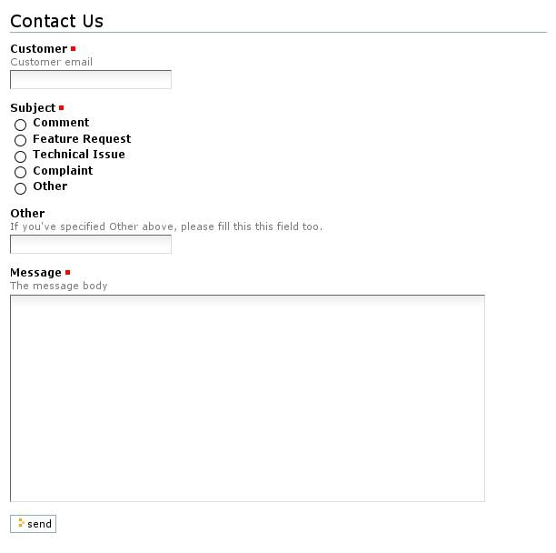

Customizing the template and the widgets¶
Description
Hack into the appearance of your form.
Customizing the template¶
plone.app.form provides a handy default template named pageform.pt which integrates well with the default Plone skin, but you might need to customize it or write your own one.
To do that, override the template attribute of the form class definition:
class FeedbackForm(PageForm):
"""
A typical feedback form
"""
label = u'Contact Us'
form_fields = form.Fields(IFeedbackForm)
template = ViewPageTemplateFile('feedback_form.pt')
result_template = ViewPageTemplateFile('feedback_result.pt')
@form.action("send")
def action_send(self, action, data):
mhost = MHost()
self.mFrom = data['customer']
self.mTo = "feedback@mycompany.com"
self.mSubject = data['subject']
self.mBody = data['message']
mhost.Send(self.mFrom, self.mTo, self.mSubject, self.mBody)
return self.result_template()
As already stated, all the view attributes will be available inside the page template, including:
- label - A label to display at the top of the form.
- prefix - A string added to all widget and action names.
- form_fields - The list of form's fields.
- widgets - A list of views for the former fields. The widgets are looked up as multiadapters for each schema field and the request providing IDisplayWidget or IInputWidget.
- errors - A list of errors encountered during validation.
- error_views - A list of views for the former errors. These views are looked up as multiadapters for each error and the request providing zope.app.form.browser.interfaces.IWidgetInputErrorView.
- status - An update status message, normally generated by success or failure handlers.
- availableActions - The list of form's available actions.
- template - The template used to display the form.
It's reccommended to start with the default pageform.pt and customize it cutting, pasting, deleting and entering text and tags.
Using named templates
Another really zope3-ish method to choose the form template is using the zope.formlib named templates. Using named templates can be (and actually is) an overkill if you've designed your template to work with your form class as a single component. But if you write a form class and the template is just a visual customization of that form, you might want to be able to customize the template without having to reimplement the whole class, or let others do so. This is exactly how Plone overrides the default zope.formlib template with a more plone-ish one in the plone.app.form package.
Please note that this approach was not taken in the example product example.formlib.
Named templates are adapters for the form's view class to INamedTemplate, bound to the form class only by their names. This way, a third party product (e.g. a theme) can register a different template with the same name (usually in a different browser skin layer) to override the default one. Moreover, they're very easy to use. Modify and add the emphasized lines:
from zope.formlib.namedtemplate import NamedTemplate
# Five's ViewPageTemplateFile doesn't work correctly with formlib's NamedTemplateImplementation,
# so we use here the Plone implementation
from plone.app.form import named_template_adapter
class FeedbackForm(PageForm):
"""
A typical feedback form
"""
label = u'Contact Us'
form_fields = form.Fields(IFeedbackForm)
template = NamedTemplate('feedback.form')
result_template = ViewPageTemplateFile('feedback_result.pt')
# rest of the form class implementation...
feedback_template = named_template_adapter(
ViewPageTemplateFile('feedback_form.pt'))
In configure.zcml, add the following snippet to register the named template as an adapter for your form:
<adapter
factory=".browser.feedback_template"
for=".browser.FeedbackForm"
name="feedback.form"
/>
Name your page template feedback_form.pt and you're done.
Customizing the widgets¶
As we've already stated earlier, form widgets are views for schema fields, i.e. multiadapters for each schema field and the request providing IDisplayWidget or IInputWidget, depending on if they display field data or offer editing funcionality to the user.
To do so, override the custom_widget attribute of a field (which defaults to None). Remember how we set up the form's fields:
class FeedbackForm(PageForm):
"""
A typical feedback form
"""
label = u'Contact Us'
form_fields = form.Fields(IFeedbackForm)
# rest of the form class...
The form_fields fields are accessible throught a dict-like interface, with the schema field names as keys, so we write:
from zope.app.form.browser import RadioWidget as _RadioWidget
def RadioWidget(field, request):
vocabulary = field.vocabulary
widget = _RadioWidget(field, vocabulary, request)
return widget
class FeedbackForm(PageForm):
"""
A typical feedback form
"""
label = u'Contact Us'
form_fields = form.Fields(IFeedbackForm)
form_fields['subject'].custom_widget = RadioWidget
# rest of the form class...
Here, we're specifying a custom widget for the subject field: RadioWidget, which displays a radio box for every item from the field's vocabulary. The zope.app.form.browser and plone.app.form.widgets packages provide a reasonable set of widgets to use and customize, including dropdowns and Kupu/WYSIWYG. Unfortunately, creating new widgets is out of the scope of this tutorial for now.
The RadioWidget function deserves a little explanation. Believe it or not, zope.formlib doesn't handle custom widgets with vocabularies (called items widgets) properly, because it calls form_field.custom_widget(field, request) either the field has an associated vocabulary or not, and item widgets have to be initialized with a vocabulary argument too; so a wrapper function is needed to workaround this issue.
Here's how the improved form looks like:
